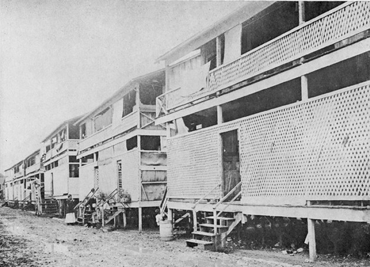
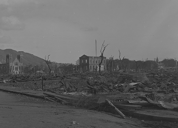

Best known for its Costco and community college, Iwilei was once infamous as Honolulu's red-light district. In 1900, the area was home to the Iwilei Stockade, lined with rows of brothel rooms. These "boogie houses" were permitted and regulated by the government, considered a "public necessity" at the time. This system remained in place until 1917, when the operations were shut down and relocated to Chinatown.
Photo credit: Old Images of Hawaiʻi

In the mid-1800s, Chinatown in Honolulu began developing as Chinese immigrants arrived to work on Oahu's sugar plantations. In 1900, during a bubonic plague outbreak, controlled burns meant to stop the spread of infection accidentally set much of the neighborhood ablaze, including the original Kaumakapili Church. The fire destroyed 38 acres, leaving most of Chinatown in ruins.
Photo credit: Hawaiʻi State Archives Digital Collection